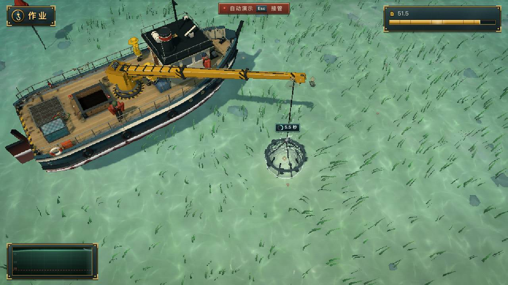
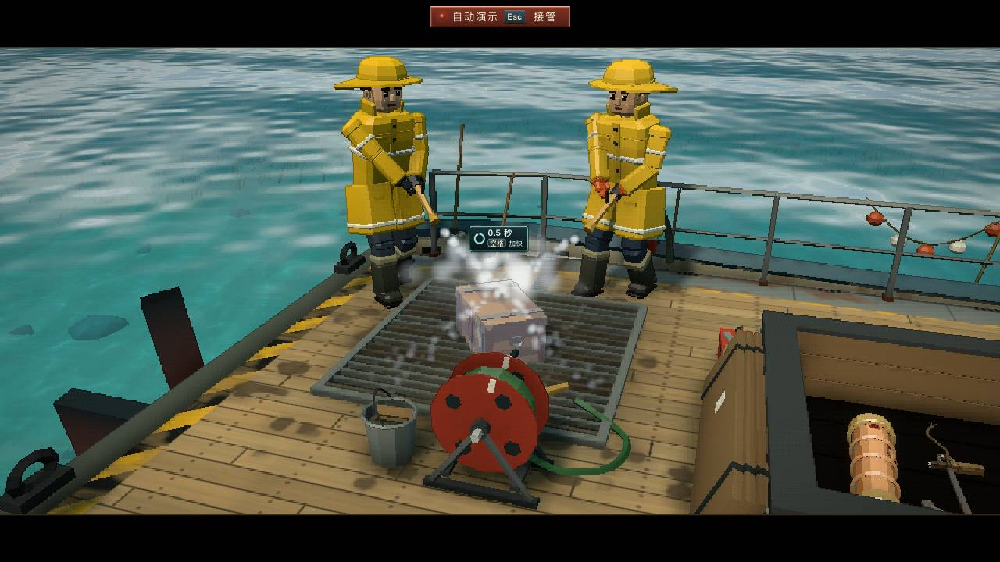
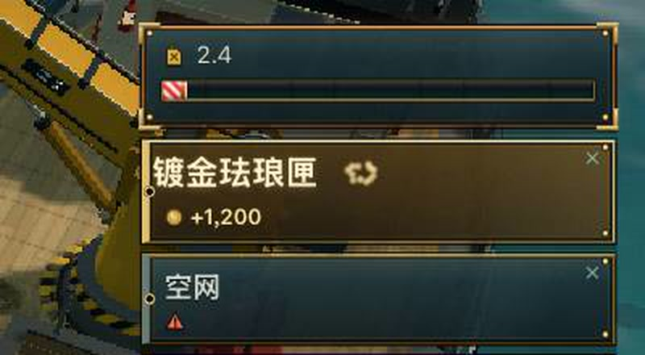

第 7 轮 · 效果017-r09-fx-batch
沉债 · 先看这一轮变了什么；能玩的是最新一版。
这一轮变了什么
B7 网触底，作业大景、同一镜头（24 米外）：原来触底只起一小团泥，这个距离几乎看不见；现在离底 1 米海底先压上网影、草往外倒，触底那一帧闷响和一圈沙浪、泥沙同时推出去，鱼群炸开，草整片压倒。（改前是当时测量的截图，触底后 0.3 秒；改后是同一镜头 4.5 秒录像）

C6 珍品确认，爆发后 0.15 秒、同一镜头：原来闪白盖住整个画面，12 样东西挤在同一帧；现在不闪白，世界褪成灰只留银币匣，名字这时才砸上来。
C6 珍品确认整段：原来冲完直接一下全炸开；现在排开了——泥壳最后 1.5 秒停住、最后 0.4 秒环境声抽走只剩一滴水，爆发时先是银币声、镜头往下一顿、褪色只留它，0.15 秒后和弦和名字，0.3 秒起金边往外推、颜色回来。（改前是同一镜头冲洗九成那一刻的截图；改后是 5 秒录像，没有声音，声音在 effects.html 里听）

W1 燃油逼近·近（黄），同一时刻的油表：原来只有油条变橙；现在表框和数字转成琥珀色、里外一层琥珀光慢慢呼吸，耳边约 1 秒一下很轻的心跳；油条 15% 处多了一道刻线（A7）。
W1 燃油逼近从远到再近（A7 跟着）：原来到“不够这一网”只是油条变红；现在一路是平常→黄（呼吸）→红（红光常亮、心跳每秒 2 下、每下表一跳、写“油不够这一网”），最后按下网被拒：表一抖、那行字闪一下、心跳停一拍。（改前是原来红的那一刻；改后是 8 秒录像，油是演示里按每秒 2.6 往下减的）

它自己的汇报
第 9 轮第一批（B7、C6、W1，A7 跟着改）做完了。整套测试 54 项全部通过，其中 12 项是这一批新加的。效果单和标签版都能用。
这一批改了什么
-
B7 网触底：
- 网离底 1 米时，海底先压上来一块网影，网口下的草开始往外倒。
- 触底那一帧，闷响和一圈沙浪、泥沙、8 个配重下的沙股同时出来。原来是 46 个粒子，而且淡入很慢；现在约 108 个粒子，同一帧就看得见，24 米外的作业大景里看得清。
- 越深，沙浪越宽越亮；15 米深处也看得出。
- 鱼群从网口炸开再游回来。草整片压倒，网提起后约 12 秒立回来。
-
C6 珍品确认：原来所有东西挤在同一帧，现在按时间排开：
- 冲洗最后 1.5 秒，泥壳停住不掉；最后 0.4 秒环境声抽走，只剩一滴水。
- 爆发：先是银币匣自己的钱币声，镜头往下一顿（全程只震这一次），世界褪成灰、只留它有颜色。0.15 秒后和弦和名字一起砸上来。
- 0.3–1.5 秒，一道金边从它往外推，推过的地方颜色回来。
- 闪白从 0.55 降到 0；任意 0.2 秒里最多的发声体从 44 个降到 22 个。
-
W1 燃油逼近（A7 跟着改）：
- 远：平常色，不出声。
- 近：表框和数字转琥珀色，一进黄先亮一下，再慢慢呼吸；耳边约 1 秒一下很轻的心跳，每一下油条跟着跳。
- 再近：表发红，心跳每秒 2 下，表上写“油不够这一网”。
- 这时按下网被拒：表一抖，心跳停一拍。
- A7：油条 15% 处加了一道刻线；按下网时，这一网要用的那截斜纹在原地烧掉。
交给你看的
-
effects.html：按编号列出这一批，共 4 条、9 个场面（比如 B7 有浅处、15 米深处、拉近看草三种）。- 每个都在真实游戏场景里单独放：先不出声地把场面快进摆好，再按真实时间放。
- 可以重播、慢放（½×、¼×，游戏时间、声音长短、界面动画一起慢）、暂停、开关声音。
- 下面按游戏时间列出这一次放出的每个效果编号和每一声。
-
条目在
fxlab/里一批一个文件，以后加一批就加一个文件、在页面里加一行。
-
game-tagged.html：同一个游戏，每放一个效果，右下角写出编号和名字。正常的index.html里不出现。 -
本轮变化/：5 组改前/改后，说明在changes.json里。录像没有声音，声音要在效果单里听。
需要你知道的
- 改前没有录像，只有截图。 中途进程被中断，临时目录里的旧版构建和改前录像都丢了。改前用的是原来测量时拍的截图，镜头和改后同一个；有两组截图对截图的是同一时刻（C6 爆发后 0.15 秒、W1 黄）。B7 只有改后录像，没有截图对截图的那一组。
- 自动演示的时间挪了一点。 触底时鱼群现在会被冲散，自动驾驶看到的声呐回波跟着变，第二趟切到作业晚了 0.05 秒，之后的事件跟着晚 0.05–0.1 秒。玩法规则没有变。
-
测量重跑过一遍。
tools/fx-shots和测量数据换成了新版的。清单里只改了 B7、C6、W1、A7 四行的“现在”一栏。为了让数字反映看到的东西，测量工具改了两处：认新的触底效果；把珍品余波里往上飘的金星按一股连续流来计。 -
第二批的编号没碰。 珍品近景里船员欢呼（C7）、被拒那一声
deny拆声，都留给第二批。 - 珍品展示到 1.9 秒左右，银币匣的盖子会挡住它。 这是原来的镜头就有的，这一批没动。
用时
用时 3 小时 48 分 · 233 步 · 花费 $18.30
改了哪些文件（比起 016-r08-fx-list：新加 0 · 改动 0 · 删掉 116）
这一轮收到的 prompt
这是第 9 轮打磨：照效果清单做这一批效果，每一个都做成伟大的效果。效果清单在 `效果清单.md`，游戏和设计文档都在当前文件夹。 范围：效果清单.md 第 5 节的第一批（试方向）：B7、C6、W1（A7 跟着一起改）。每个编号在清单里写着时刻、想要的感受、样子、档、种类和现在量到的样子。同时还有几批从同一个起点在做，做完合到一起，别碰它们的编号：第二批（量出来的毛病：第 5 节列的 6 件（第 3 节写着它们是怎么量出来的））。 交给用户看的：一页效果单 `effects.html`，按编号列出这一批，每条能在真实场景里单独放、重播、慢放，带声音开关；再给一个打开标签的游戏版本 `game-tagged.html`，每放一个效果，角上写出它的编号和名字。游戏里已经有这两样的，接着往里加。 自动试跑都无头，不在屏幕上开窗口；不问问题，自己决定；不往网上推送。 只在当前文件夹里看和改：不要打开上一级文件夹，也不要看别的轮次的文件夹，也不要去看 … 里的技能和规则。